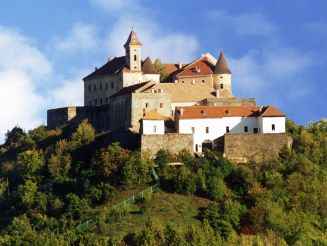
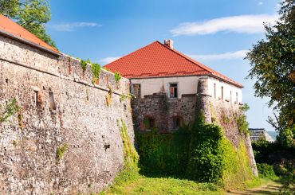
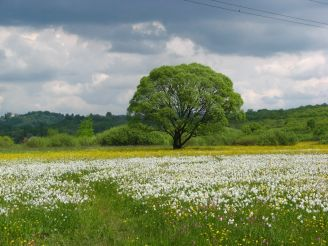
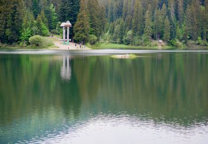
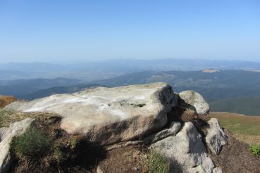

Однією з найдавніших українських фортець в Україні є відомий замок Паланок у Мукачеві. Його середньовічні стіни до нині зберігають чимало таємниць та легенд. Споруда розташувалася на горі вулканічного походження, а місто фактично будувалося навколо неприступної фортеці на рівнинній території. Сьогодні двері замку відкриті для кожного туриста. Тут проводяться екскурсії, а добре обізнані в історії фортеці можуть придбати квиток та просто погуляти територією замку.
Ужгородський замок має тисячолітню історію. Він є головним туристичним місцем в Ужгороді. Якщо вас цікавить середньовічна історія і приклад її архітектури, то вам обов’язково потрібно відвідати це казкове місце, що височіє на Замковій горі.
Урочище Кіреші між закарпатськими річками Тиса і Хустець щорічно у першій половині травня перетворюється на казкову білосніжну галявину. Саме у цей час тут квітнуть тисячі білих нарцисів, через що це місце й дістало свою назву – Долини нарцисів.
У Національному природному парку «Синевир» можна знайти «морське око» Карпатських гір. Так називають перлину Карпат – озеро Синевир, що утворилось близько 10 тисяч років тому внаслідок потужного зсуву гірських порід. Це найбільше гірське озеро в Україні. Крім того, воно глибоке: максимальна відстань до дна – близько 24 метрів. Проте старожили розповідають, що досі нікому не вдалось виміряти його точну глибину. Через висоту, на якій розташоване озеро Синевир (приблизно 1000 метрів над рівнем моря), вода тут холодна навіть улітку.
Говерла є найвищою вершиною Українських Карпат і водночас найвищою точкою України. Розташована ця знаменита гора у масиві Чорногора, а саме на межі Івано-Франківської та Закарпатської областей. Крім того, й до українсько-румунського кордону від неї, як кажуть, рукою подати. Невідомо, хто й коли здійснив перший підйом на гору. Але зараз маршрут до вершини погожої літньої пори є цілком звичним і навіть традиційним для багатьох туристів, включно з тими, хто не має спеціальної спортивної підготовки. Варто пам’ятати, що гора Говерла розташована в охоронній зоні Карпатського біосферного заповідника.
